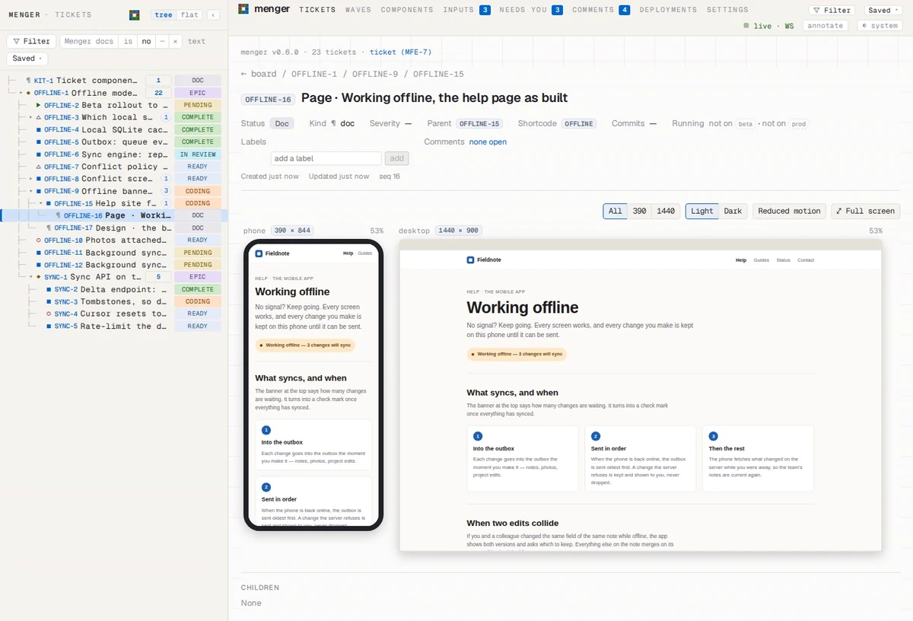
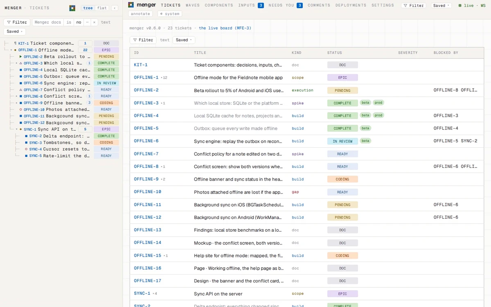
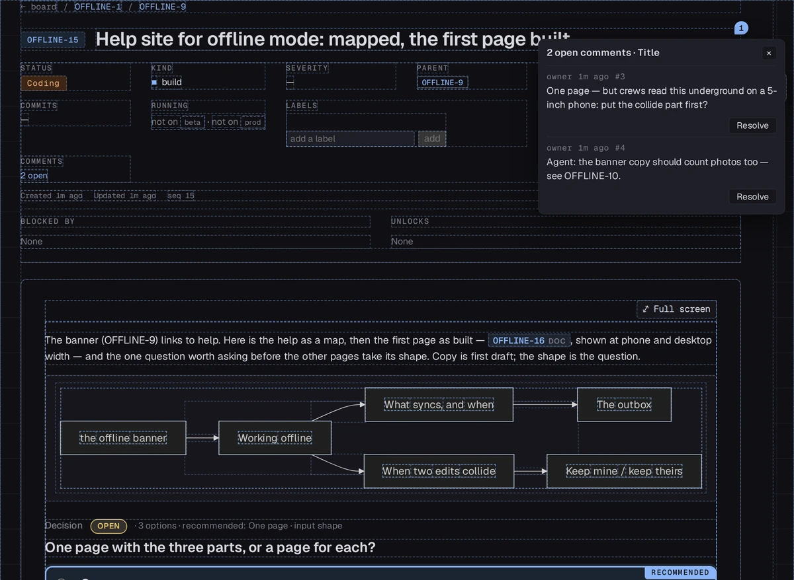
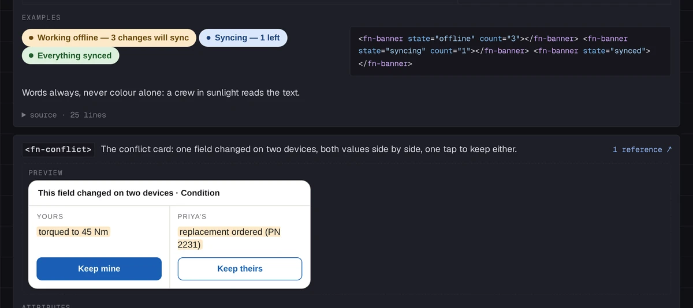
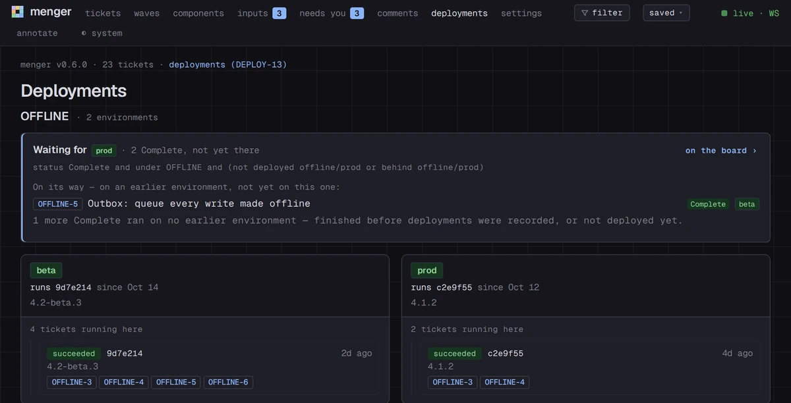

An agent builds the page.
The map, the page, the components it needs, filed under the build, at every width.
doc→390 · 1440
For software teams of people and AI agents
The page itself, built in the ticket and shown at phone and desktop width; the map it came from; the question that decides the rest. The team notes and answers in place; the work goes on.
open source · MIT licence


The map, the page, the components it needs, filed under the build, at every width.
doc→390 · 1440
The agent queues its question; it arrives on every open screen. A note pinned on anything; one decision, each option with its cost.
now→decided
The agent builds what you picked; the deploy records itself; the ticket says it reached prod.
Complete→prod
A body is markdown, a diagram or a whole HTML page, a decision in it like any paragraph. Anyone pins a note on any part; notes and answers stay with the work.
Inside a ticket
Define a component in a ticket, with its docs and the parts a theme may skin, and use it in any body. Every state is seen before the app has a line of it.
Components
Your CI records each deploy; menger works out which tickets it carried. A ticket says where it runs; the board, what reached prod and what still waits.
Deployments
Everything menger does is a method on one connection; the app has no side door, and ships inside the binary. Anything you can click, an agent can call.
The command line# file the page under the build, then put its question in front of the owner
synapse -P 4455 menger tickets create --epic OFFLINE --parent OFFLINE-15 --kind doc \
--title 'Page · Working offline' --body "$(cat page.html)"
synapse -P 4455 menger tickets queue --id OFFLINE-15 --urgency now --input shape \
--reason 'OFFLINE-15 is idle until the shape is picked'cargo install menger --features embedded-appmenger --db-path ~/menger/tickets.dbThe web app is built into the binary. Then open 127.0.0.1:4456.
The ports, the flags and checking the file: the guide →